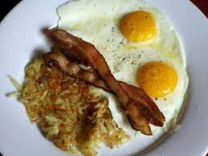

Andrew's Favorite Breakfast

Start your day off right with this hearty breakfast of Fried Eggs, Bacon, and Hashbrowns! The crispy bacon and golden hashbrowns are the perfect complement to the perfectly cooked eggs, making for a delicious and satisfying meal.
Ingredients
- 2 slices of bacon
- 2 large eggs
- 1 large potato, peeled and grated
- 1/2 teaspoon salt
- 1/4 teaspoon black pepper
- 2 tablespoons vegetable oil
Instructions
- In a skillet over medium heat, cook the bacon until crispy.
- Remove the bacon from the skillet and set aside on a paper towel to cool and drain.
- In a bowl, combine the grated potato, salt, and black pepper.
- In the same skillet over medium-high heat, add the vegetable oil and the grated potato mixture.
- Press the potato mixture down with a spatula to form a pancake shape and cook until golden brown on both sides, about 3-4 minutes per side.
- Remove the hashbrowns from the skillet and set them aside.
- In the same skillet over medium heat, crack the eggs and cook to your desired doneness (sunny-side up or over-easy).
- Serve the fried eggs and hashbrowns with the crispy bacon on the side.